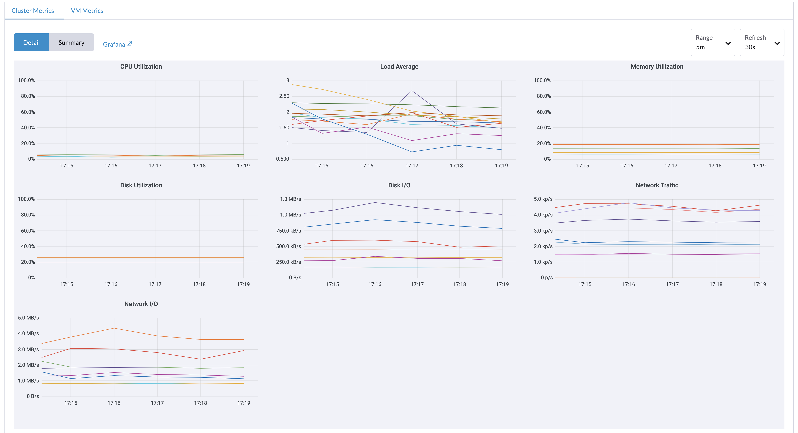
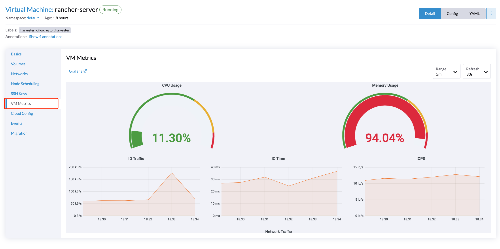
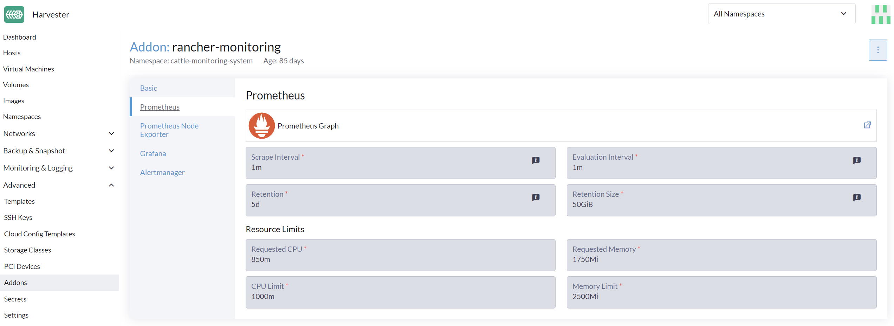
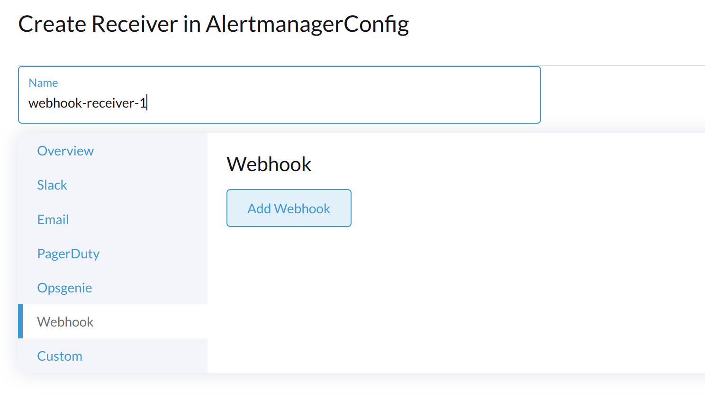
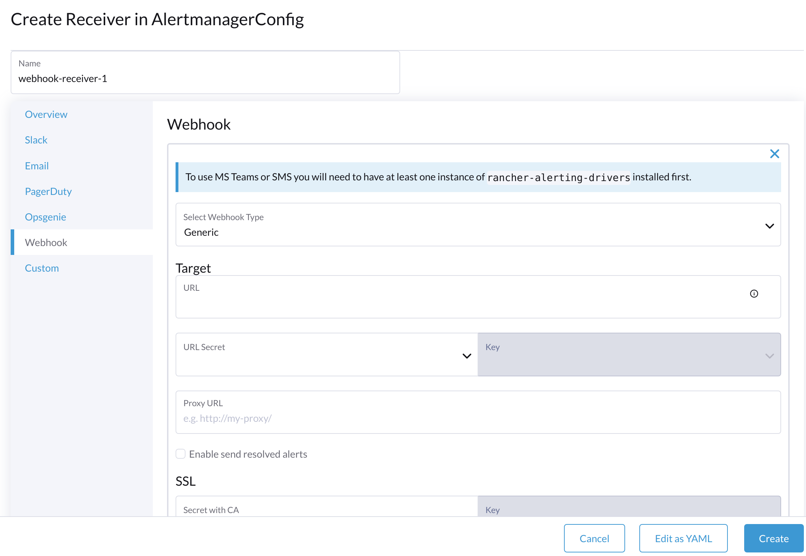

监控
仪表板指标
SUSE Virtualization提供了一个内置的监控集成，使用 Prometheus。安装期间监控会自动启用。
在`Dashboard`页面，用户可以分别查看集群指标和使用最多的前10个虚拟机指标。 此外，用户可以点击 Grafana仪表板链接，在Grafana用户界面上查看更多仪表板。

|
只有管理员用户能够查看集群仪表板指标。 此外，Grafana由`rancher-monitoring`提供，因此默认管理员密码为：prom-operator 参考： values.yaml |
虚拟机详细指标
对于虚拟机，您可以通过点击`VM details page > VM Metrics`查看虚拟机指标。

|
当前的`Memory Usage`是基于`(1 - free/total) * 100% |
例如，在Linux操作系统中，`free -h`命令输出当前内存统计信息如下
$ free -h
total used free shared buff/cache available
Mem: 7.7Gi 166Mi 4.6Gi 1.0Mi 2.9Gi 7.2Gi
Swap: 0B 0B 0B
相应的`Memory Usage`是`(1 - 4.6/7.7) * 100%，大约是`40%。
实时迁移状态和指标
实时迁移是确保工作负载正常运行的关键功能。您可以通过rancher-monitoring附加产品直接从Harvester用户界面监控虚拟机实时迁移的进度。
-
启用*rancher-monitoring*附加产品。
-
转到*虚拟机*。
-
在列表中找到虚拟机，然后单击名称以查看其详细信息。
-
转到*迁移*选项卡。
*迁移*选项卡分为以下几个部分：
-
一般信息：本节显示当前迁移阶段、源节点和目标节点，以及迁移的开始和结束时间。
-
实时指标：这些指标由Prometheus生成，并保留_五天_。
度量 说明 剩余迁移数据字节数
尚未迁移的客户操作系统数据量
已处理迁移数据字节数
已迁移的客户操作系统数据量
迁移内存传输速率
内存传输的速率
迁移脏内存速率
客户内存中数据更改的速率，但未与磁盘上的数据同步
如果*剩余迁移数据字节数*值在*已处理迁移数据字节数*值增加时稳定下降，则数据正在成功迁移到目标。
如果*剩余迁移数据字节数*值波动，而*迁移脏内存速率*保持非常高，则虚拟机承受着很大的压力。在某些情况下，这可能会阻止迁移完成。
-
迁移事件：这些特定于虚拟机的事件记录由Kubernetes API服务器（kube-apiserver）生成，并保留_一个小时_。
如何配置监控设置
监控有几个组件，帮助从所有节点/Pods/虚拟机收集和汇总指标数据。监控所需的资源取决于您的工作负载和硬件资源。SUSE Virtualization 根据一般用例设置了默认值，您可以据此进行更改。
目前，Resources Settings 可以为以下组件进行配置：
-
Prometheus
-
Prometheus 节点导出器
从用户界面
在 高级 页面，您可以查看和更改资源设置，如下所示：
-
转到 高级 > 附加产品 页面并选择 rancher-monitoring 页面。
-
在 Prometheus 标签下，更改资源请求和限制。
-
配置 rancher-monitoring 附加产品的设置完成后，选择 保存。监控 部署将在几秒钟内重新启动。请注意，重启可能需要一些时间来重新加载先前的数据。

|
只有在启用 rancher-monitoring 附加产品时，UI 配置才会可见。 |
最常用的选项是内存设置：
-
Requested Memory是Monitoring资源所需的最小内存。推荐值约为单个管理节点系统内存的 5% 到 10%。小于 500Mi 的值将被拒绝。 -
Memory Limit是可以分配给Monitoring资源的最大内存。推荐值约为单个管理节点系统内存的 30%。当Monitoring达到此阈值时，它将自动重启。
根据可用的硬件资源和系统负载，您可以相应地更改上述设置。
|
如果您有多个管理节点且硬件资源不同，请根据较小的资源设置 Prometheus 的值。 |
|
当在一个节点上部署越来越多的虚拟机时， |
从命令行界面（CLI）
您可以使用以下`kubectl`命令更改`rancher-monitoring` 附加产品的资源配置：kubectl edit addons.harvesterhci.io -n cattle-monitoring-system rancher-monitoring。
资源路径和默认值如下：
apiVersion: harvesterhci.io/v1beta1
kind: Addon
metadata:
name: rancher-monitoring
namespace: cattle-monitoring-system
spec:
valuesContent: |
prometheus:
prometheusSpec:
resources:
limits:
cpu: 1000m
memory: 2500Mi
requests:
cpu: 850m
memory: 1750Mi
|
当附加产品被禁用时，您仍然可以进行配置调整。但是，这些更改仅在您重新启用附加产品时生效。 |
Alertmanager
SUSE Virtualization使用`Alertmanager`来收集和管理集群中发生/正在发生的所有警报。
Alertmanager配置

从WebUI配置AlertmanagerConfig
要将警报发送到第三方服务器，请配置`AlertmanagerConfig`。
-
在用户界面上，转到*监控与日志 → 监控 → Alertmanager配置*。
-
在*Alertmanager配置：创建 屏幕，指定一个命名空间和名称，然后点击*Create。

-
点击您刚刚创建的配置名称。

-
点击*Add Receiver*。

-
为接收器指定一个名称，然后选择接收器类型。

-
配置所需的设置，然后点击*Create*。

要设置Microsoft Teams或SMS网络钩子，首先使用以下命令安装rancher-alerting-drivers应用：
helm repo add rancher-charts https://charts.rancher.io/
helm repo update
helm install rancher-charts/rancher-alerting-drivers \
--set sachet.enabled=false \ # Set to true if you want to use SMS Webhook
--set prom2teams.enabled=true \ # Set to true if you want to use MS Teams Webhook
--namespace cattle-monitoring-system \
--generate-name有关详细的配置说明，请参见 Receiver Configuration中的Rancher文档。
如果您的环境没有直接的互联网访问（隔离的），您必须手动下载Helm图表和相关的容器镜像，然后将它们上传到SUSE Virtualization集群。
-
下载rancher-alerting-drivers Helm图表并打包成软件包。
helm pull rancher-charts/rancher-alerting-drivers --version <VERSION>
-
下载所需的镜像。
docker save -o sachet.tar rancher/mirrored-messagebird-sachet:<VERSION> docker save -o prom2teams.tar rancher/mirrored-idealista-prom2teams:<VERSION>
-
将图表和镜像上传到SUSE Virtualization集群。
-
在所有SUSE Virtualization节点上加载镜像。
docker load -i sachet.tar docker load -i prom2teams.tar
-
在SUSE Virtualization集群上安装rancher-alerting-drivers。
|
SUSE Virtualization不管理`rancher-alerting-drivers` APP的升级，该应用不属于SUSE Virtualization。您必须手动升级该 APP。 |
从CLI配置AlertmanagerConfig。
您也可以从CLI添加`AlertmanagerConfig`。
示例：在`default`命名空间中的Webhook接收器。
cat << EOF > a-single-receiver.yaml
apiVersion: monitoring.coreos.com/v1alpha1
kind: AlertmanagerConfig
metadata:
name: amc-example
# namespace: your value
labels:
alertmanagerConfig: example
spec:
route:
continue: true
groupBy:
- cluster
- alertname
receiver: "amc-webhook-receiver"
receivers:
- name: "amc-webhook-receiver"
webhookConfigs:
- sendResolved: true
url: "http://192.168.122.159:8090/"
EOF
# kubectl apply -f a-single-receiver.yaml
alertmanagerconfig.monitoring.coreos.com/amc-example created
# kubectl get alertmanagerconfig -A
NAMESPACE NAME AGE
default amc-example 27s
Webhook接收到的警报示例。
发送到Webhook服务器的警报将采用以下格式：
{
'receiver': 'longhorn-system-amc-example-amc-webhook-receiver',
'status': 'firing',
'alerts': [],
'groupLabels': {},
'commonLabels': {'alertname': 'LonghornVolumeStatusWarning', 'container': 'longhorn-manager', 'endpoint': 'manager', 'instance': '10.52.0.83:9500', 'issue': 'Longhorn volume is Degraded.',
'job': 'longhorn-backend', 'namespace': 'longhorn-system', 'node': 'harv2', 'pod': 'longhorn-manager-r5bgm', 'prometheus': 'cattle-monitoring-system/rancher-monitoring-prometheus',
'service': 'longhorn-backend', 'severity': 'warning'},
'commonAnnotations': {'description': 'Longhorn volume is Degraded for more than 5 minutes.', 'runbook_url': 'https://longhorn.io/docs/1.3.0/monitoring/metrics/',
'summary': 'Longhorn volume is Degraded'},
'externalURL': 'https://192.168.122.200/api/v1/namespaces/cattle-monitoring-system/services/http:rancher-monitoring-alertmanager:9093/proxy',
'version': '4',
'groupKey': '{}/{namespace="longhorn-system"}:{}',
'truncatedAlerts': 0
}
|
不同的接收器可能以不同的格式呈现警报。有关详细信息，请参阅相关文档。 |
已知限制
AlertmanagerConfig`由`namespace`强制执行。不支持没有命名空间的全局级别`AlertmanagerConfig。
我们已经创建了一个 GitHub问题来跟踪上游更改。一旦该功能可用，SUSE Virtualization将采用它。
查看和管理警报
来自Alertmanager仪表板
您可以通过以下链接访问`Alertmanager`的原始仪表板。请注意，您需要将`the-cluster-vip`替换为实际的集群VIP：
`Alertmanager`仪表板的整体视图如下。

您可以查看警报的详细信息：


查错
有关监控支持和故障排除，请参阅故障排除页面。